1 Overview
The IVI-NSCLC model simulates disease progression for different sequential treatment strategies using a continuous time state transition model (CTSTM) for patients with epidermal growth factor receptor (EGFR) positive NSCLC. Treatment sequences that can be modeled are shown in the figure below. Tyrosine kinase inhibitors (TKIs) can be used at first line. Possible second line treatments (2L) and treatments beyond second line (2L+) depend on whether a patient acquired a T790M mutation.

The model structure depends on whether the model starts at 1L or 2L treatment. If the model begins at 1L, then either a four-state CTSTM or a three-state CTSTM can be used. We prefer the four-state CTSTM because it explicitly models 2L treatments; however, there is no 2L evidence following some 1L treatments (i.e., osimertinib), so a three-state model must be used in these cases.
In the four-state model, patients begin 1L treatment in stable disease (S1) and can either transition to the progression state (P1) or death (D). At progression, move to the progression-free (stable) state (S2) with 2L treatment and can again either have their disease progress (P3) or die. At P3, patients begin 2L+ treatment and remain in the progressed state until death. Time-varying hazard rates for transitions between states \(r\) and \(s\) and are denoted by \(h^{rs}(u)\).

In the three-state model, all hazard rates are based on 1L clinical trial evidence. Patients begin in stable disease (S1) and they can transition to the progression state (P1) or death (D).

If the model begins at second line, then a three-state model nearly identical to the figure above must be used. In the 2L case, patients begin in stable disease (S2) and transition to progression (P2) or death (D).
The three and four-state model structures are used to construct an economic model that consists of three primary submodels: (i) a disease progression model (i.e., transition model) that determines transitions between health states, (ii) a utility model that simulates the health-state utility of each health state, and (iii) a set of cost models that simulates the costs associated with multiple cost categories (i.e., drug acquisition and administration costs, inpatient medical costs, outpatient medical costs, adverse event costs, and productivity losses). The economic model simulates relevant outcomes of interest including the probabilities of being in each of the health states over time, quality-adjusted life-years (QALYs), and costs by category. Probabilistic sensitivity analysis (PSA) is used to propagate uncertainty in the model input parameters throughout the model.
Two R packages are needed to simulate the model: the iviNSCLC and hesim packages. We will also use ggplot2, gridExtra, and scales for plotting, knitr to create tables, and data.table to manipulate data and simulation output.
library("iviNSCLC")
library("hesim")
library("data.table")
library("ggplot2")
library("gridExtra")
library("scales")
library("knitr")
ggplot2::theme_set(theme_minimal())2 Parameter estimates
A number of different statistical models are used to parameterize the economic model. First, Bayesian network meta-analyses (NMAs) were conducted to parameterize multi-state statistical models for the health-state transitions and the probability of grade 3/4 adverse events. Second, estimates from the literature were used to characterize probability distributions of utility and each cost category. The parameter estimates, which load with the iviNSCLC package, are as follows:
-
params_mstate_nma: The posterior distribution for the parameters of the Bayesian multi-state NMA. -
params_ae_nma: The posterior distribution for the parameters of the Bayesian NMA of adverse events. Estimated using a binomial model with a logit link. -
params_utility: The probability distribution of the health state utility associated with each health state (S1, P1, and P2). -
params_costs_tx: The drug acquisition and administration costs for each treatment. -
params_costs_inpt: Inpatient medical costs by health state (S1, P1, and P2). -
params_costs_op: Outpatient medical costs by health state (S1, P1, and P2). -
params_costs_ae: The costs associated with each of the adverse events from the NMA.
3 Economic model
We provide an example a four-state model for 1L treatment, while also showing how a three-state model could be specified. Importantly, different modeling approaches should be used for the three-state and four-state approaches. Since a “clock-forward” multi-state NMA was conducted separately by line of treatment, the four-state model is a mixture of clock-forward and “clock-reset” models. In the clock-reset approach, time \(u\) in \(h^{rs}(u)\) resets after each transition whereas in the clock-forward approach time \(u\) refers to time since the start of the model (see the tutorial here for a more detailed discussion). In the four-state model, the clock resets when entering state S1. Conversely, in the three-state model (either starting at 1L or 2L), the transition rates are always estimated using a NMA of treatments within a single line, so a clock-forward multi-state model must be used.
An individual-level simulation is required to simulate clock-reset and mixtures of clock-forward and clock-reset models, and can also be used to simulate clock-forward models. The individual-level model is simulated in R using the IndivCtstm class from the hesim package.
3.1 Set up
3.1.1 Patient population
The first step in the analysis is to define the target population. In the individual-level model, a sufficient number of patients must be simulated so that expected (i.e., mean) outcomes are stable across simulations. In this example, we simulate 1,000 patients.
pats <- create_patients(n = 1000)3.1.2 Treatment sequences
Since T790M mutation status is unknown in the 1L four-state case, a treatment sequence consists of a 1L treatment and treatment options for both the T790M+ and T790M- cases at 2L and 2L+. Multiple treatment sequences are combined into a “txseq_list” object using txseq_list(). We specifiy that the model begins at first line treatment with the argument start_line = "first".
txseq1 <- txseq(first = "erlotinib",
second = c("osimertinib", "PBDC"),
second_plus = c("PBDC + bevacizumab", "PBDC + bevacizumab"))
txseq2 <- txseq(first = "gefitinib",
second = c("osimertinib", "PBDC"),
second_plus = c("PBDC + bevacizumab", "PBDC + bevacizumab"))
txseqs <- txseq_list("Sequence 1" = txseq1, "Sequence 2" = txseq2, start_line = "first",
mutation = "unknown")It is also useful to write a short convenience function for creating informative names for treatment strategies (i.e., treatment sequences), which can be used for plotting.
# Convenience function to add factor names to data table
# for plotting
strategy_factor <- function(x, rev = FALSE){
strategy_names <- names(txseqs)
if (rev == FALSE){
x[, strategy_name := factor(strategy_id, levels = 1:length(txseqs),
labels = strategy_names)]
} else{
x[, strategy_name := factor(strategy_id, levels = rev(1:length(txseqs)),
labels = rev(strategy_names))]
}
}Note that treatment sequences can also begin at second line, conditional on T790M mutation status.
txseqs_2L_pos <- txseq_list("Sequence 1" = txseq1, "Sequence 2" = txseq2, start_line = "second",
mutation = "positive")
txseqs_2L_neg <- txseq_list("Sequence 1" = txseq1, "Sequence 2" = txseq2, start_line = "second",
mutation = "negative")3.1.3 Model structure
In the IVI-NSCLC model, the treatment sequences and model structure are closely connected: a four-state model is only possible when beginning at 1L and cannot be used to model outcomes with osimertinib. A model structure is specified with model_structure(). The survival distribution used to estimate the multi-state NMA and model transitions between health states is specified using the dist argument. A description of the relevant health states can be generated using create_states() and possible health state transitions are stored in a transition matrix generated using create_trans_mat().
struct <- model_structure(txseqs, dist = "weibull")
# Health states
states <- create_states(struct)
print(states)## state_id state_name state_name_long
## 1: 1 S1 Stable with 1L
## 2: 2 P1/S2 Progression with 1L -> Stable with 2L
## 3: 3 P2 Progression with 2L
## 4: 4 D Death# Transition matrix
tmat <- create_trans_mat(struct)
print(tmat)## S1 P1/S2 P2 D
## S1 NA 1 NA 2
## P1/S2 NA NA 3 4
## P2 NA NA NA 5
## D NA NA NA NAWe could have also specified a three-state model, starting at either first or second line.
# 1st line model
struct_3_1L <- model_structure(txseqs, dist = "weibull",
n_states = "three")
print(create_states(struct_3_1L))## state_id state_name state_name_long
## 1: 1 S1 Stable with 1L
## 2: 2 P1 Progression with 1L
## 3: 3 D Deathprint(create_trans_mat(struct_3_1L))## S1 P1 D
## S1 NA 1 2
## P1 NA NA 3
## D NA NA NA# 2nd line model (T790M positive)
struct_3_2L <- model_structure(txseqs_2L_pos, dist = "weibull",
n_states = "three")
print(create_states(struct_3_2L))## state_id state_name state_name_long
## 1: 1 S2 Stable with 2L
## 2: 2 P2 Progression with 2L
## 3: 3 D Deathprint(create_trans_mat(struct_3_2L))## S2 P2 D
## S2 NA 1 2
## P2 NA NA 3
## D NA NA NARecall that the transition matrix depends on the model structure.
tmat_3_1L <- create_trans_mat(struct_3_1L)
tmat_3_2L <- create_trans_mat(struct_3_2L)
print(tmat_3_1L)## S1 P1 D
## S1 NA 1 2
## P1 NA NA 3
## D NA NA NAprint(tmat_3_2L)## S2 P2 D
## S2 NA 1 2
## P2 NA NA 3
## D NA NA NAAs with treatment strategies, its useful to write a convenience function for generating informative names for health states for plotting.
state_factor <- function(x){
x[, state_name := factor(state_id, levels = 1:nrow(states),
labels = states$state_name)]
}3.2 Constructing the model
We construct the economic model by combining the separate models for the health state transitions, utility, and costs.
n_samples <- 1003.2.1 Health state transition model
Health state transitions are simulated as a function of input data (which contains the covariates from the multi-state model describing differences in transition rates across treatments) and parameters (the coefficients from the multi-state NMA). These are automatically created as a function of the model structure, transition matrix, and patient population with create_transmod_data() and stored below in a data table named transmod_data. A fraction of patients are T790M mutation positive (and this fraction can vary across treatments). Coefficients from the multi-state NMA that are contained in transmod_data are extracted using transmod_params().
Recall from the discussion above that an individual-level model is required to simulate a CTSTM that that is a mixture of clock-reset and clock-forward approaches. A model of health state transitions for an individual-level CTSTM (iCTSTM) can be constructed with the IndivCtstmTrans class in hesim.
# Input data
transmod_data <- create_transmod_data(struct, tmat, pats)
## Print first 5 rows and and 10 covariates from data
print(transmod_data[1:5, 1:10]) ## strategy_id patient_id transition_id mutation tx_abb tx_hist
## 1: 1 1 1 0 erl <NA>
## 2: 1 1 2 0 erl <NA>
## 3: 1 1 3 0 pbdc erl
## 4: 1 1 4 0 pbdc erl
## 5: 1 1 5 0 pbdc erl
## osi_s1p1_scale osi_s1d_scale d_erl_s1p1_scale d_erl_s1d_scale
## 1: 1 0 1 0
## 2: 0 1 0 1
## 3: 0 0 0 0
## 4: 0 0 0 0
## 5: 0 0 0 0# Parameters
transmod_params <- create_transmod_params(n = n_samples, data = transmod_data)
## Print first 5 samples from the probability distribution and 4 covariates (which
## match those in 'transmod_data')
transmod_params$coefs$scale[1:5, 1:4]## osi_s1p1_scale d_erl_s1p1_scale d_gef_s1p1_scale osi_s1d_scale
## [1,] 2 -1 -0.5 0
## [2,] 2 -1 -0.5 0
## [3,] 2 -1 -0.5 0
## [4,] 2 -1 -0.5 0
## [5,] 2 -1 -0.5 0# Health state transition model
transmod <- hesim::create_IndivCtstmTrans(transmod_params, transmod_data, tmat)
class(transmod)## [1] "IndivCtstmTrans" "CtstmTrans" "R6"3.2.2 Adverse events
Adverse events are assumed to occur during the first month of treatment and cause a decrease in utility and an increase in costs. Adverse event probabilities in the model are consequently based on the first treatment in a treatment sequence (i.e., the 1L treatment for a model starting at 1L and the 2L treatment for a model starting at 2L). We obtain these probabilities from the posterior distributions stored in params_ae_nma using the ae_probs() function.
ae_probs <- ae_probs(n_samples, struct)3.2.3 Utility and cost models
We construct a “mean” model for utility. During the first month, utility varies across both treatment strategies and health states because adverse event probabilities vary across treatments; after the first month, utility varies across health states, but it assumed constant across treatments since adverse events no longer occur.
utilmod <- create_utilmod(n = n_samples, struct = struct, patients = pats,
ae_probs = ae_probs)We also construct models for each cost category.
costmods <- create_costmods(n = n_samples, struct = struct, patients = pats, ae_probs = ae_probs)3.2.4 Combining the models
Now that the transition, utility, and cost models have been constructed, they can be combined to construct the complete economic model. We use the IndivCtstm class from hesim, and instantiate an iCTSTM.
econmod <- hesim::IndivCtstm$new(trans_model = transmod,
utility_model = utilmod,
cost_models = costmods)3.3 Simulation
3.3.1 Disease progression
The iCTSTM is used to simulate disease progression, QALYs, and costs. We begin by simulating disease progression with $sim_disease() and set the time horizon to 20 years. We compute the probability that a patient is in each of the four health states as a function of time.
econmod$sim_disease(max_t = 20)
econmod$sim_stateprobs(t = seq(0, 20 , 1/26)) # Biweekly probabilitiesWe plot mean state probabilities (averaged across the joint probability distribution of the parameters).
# Plot of state probabilities
stprobs <- econmod$stateprobs_[, .(prob_mean = mean(prob),
prob_lower = quantile(prob, .025),
prob_upper = quantile(prob, .975)),
by = c("strategy_id", "state_id", "t")]
state_factor(stprobs)
strategy_factor(stprobs)
ggplot(stprobs[t < 2], aes(x = t, y = prob_mean, col = strategy_name)) +
geom_line() + facet_wrap(~state_name) +
xlab("Years") + ylab("Probability in health state") +
scale_color_discrete(name = "") 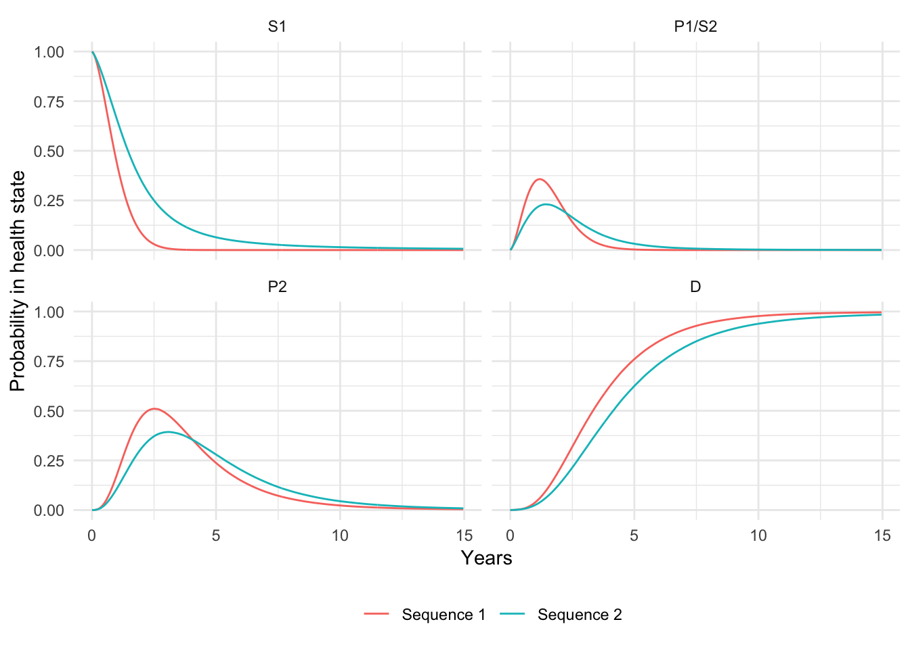
Since progression-free survival and overall survival are the most commonly reported primary endpoints in clinical trials, they are also useful to compute. We measure PFS as time with stable disease and OS as time before death.
curves <- econmod$stateprobs_[state_id == 1 | state_id == 4]
curves[, prob := ifelse(state_id == 4, 1 - prob, prob)] # OS is 1 - pr(death)
curves[, lab := factor(state_id, levels = c(1, 4), labels = c("PFS", "OS"))]
curves <- curves[, .(prob_mean = mean(prob),
prob_lower = quantile(prob, .025),
prob_upper = quantile(prob, .975)),
by = c("strategy_id", "lab", "t")]
strategy_factor(curves)
ggplot(curves[t < 2], aes(x = t, y = prob_mean, col = strategy_name)) +
geom_line() + facet_wrap(~lab) +
xlab("Years") + ylab("Survival probability") +
scale_color_discrete(name = "") 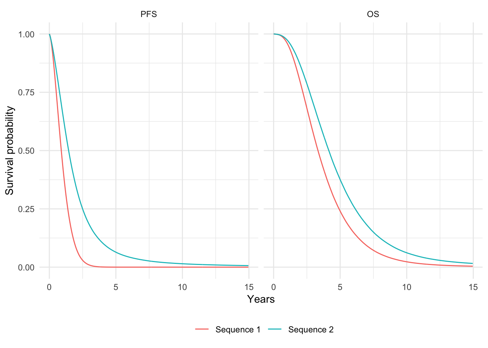
We can also summarize quantiles of the PFS and OS curves. Here, we plot the median of (mean) PFS and OS.
quantiles <- hesim::surv_quantile(curves, probs = c(.025, .25, .5, .75, .975),
t = "t",
surv_cols = c("prob_mean", "prob_lower", "prob_upper"),
by = c("strategy_id", "lab"))
strategy_factor(quantiles, rev = TRUE)
ggplot(quantiles[prob == .5], aes(x = strategy_name, y = quantile_prob_mean)) +
facet_wrap(~lab, nrow = 2) +
geom_bar(stat = "identity", fill = "#d9230f") +
geom_errorbar(aes(ymin = quantile_prob_lower,
ymax = quantile_prob_upper), width = .2) +
scale_fill_discrete(name = "") +
xlab("") + ylab("Median years") +
coord_flip() 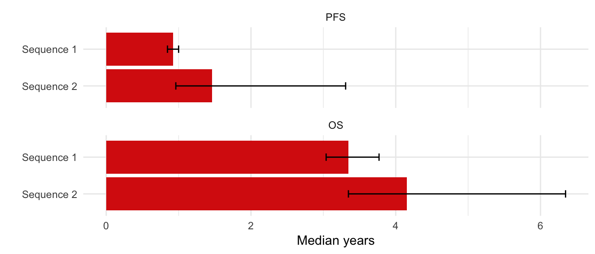
3.3.2 Adverse events
The tidy.ae_probs() function can be used to convert an ae_probs object into a tidy data.table suitable for plotting. We do that here to compare adverse event probabilities across treatment strategies.
tidy_ae_probs <- tidy(ae_probs)
plot_data <- tidy_ae_probs[, .(prob_mean = mean(prob),
prob_lower = quantile(prob, .025),
prob_upper = quantile(prob, .975)),
by = c("strategy_id", "ae_name")]
strategy_factor(plot_data, rev = TRUE)
plot_data[, ae_name := ifelse(ae_name == "Elevated alanine transaminase",
"Elevated \n alanine \n transaminase",
ae_name)]
plot_data[, ae_name := ifelse(ae_name == "Elevated aspartate transaminase",
"Elevated \n aspartate \n transaminase",
ae_name)]
ggplot(plot_data, aes(x = rev(strategy_name), y = prob_mean)) +
facet_wrap(~factor(ae_name), ncol = 3) +
geom_bar(stat = "identity", fill = "#d9230f") +
geom_errorbar(aes(ymin = prob_lower,
ymax = prob_upper), width = .2) +
scale_fill_discrete(name = "") +
scale_y_continuous(breaks = pretty_breaks(n = 3)) +
xlab("") + ylab("Probability of adverse event") +
coord_flip() +
theme(panel.spacing = unit(2, "lines"))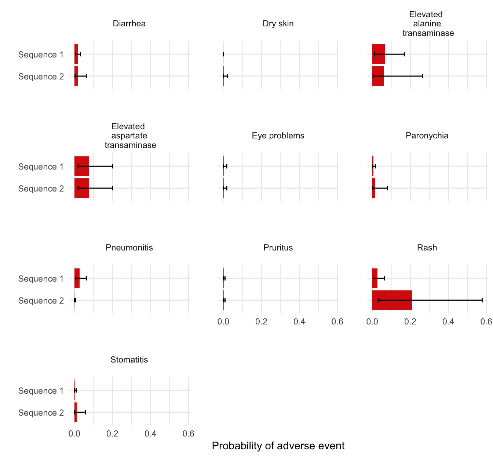
3.3.3 QALYs
Mean QALYs and life-years can be simulated for each randomly sampled parameter set by treatment sequence and health state. We simulate values without a discount rate and using a 3 percent discount rate, and plot undiscounted life-years.
# Simulate
econmod$sim_qalys(dr = c(0, .03))
# Plot
lys <- econmod$qalys_[dr == 0, .(mean_lys = mean(lys)),
by = c("strategy_id", "state_id")]
state_factor(lys)
strategy_factor(lys, rev = TRUE)
ggplot(lys, aes(x = strategy_name, y = mean_lys, fill = state_name)) +
geom_bar(stat = "identity") +
scale_fill_discrete(name = "") +
xlab("") + ylab("Mean life-years") +
coord_flip() 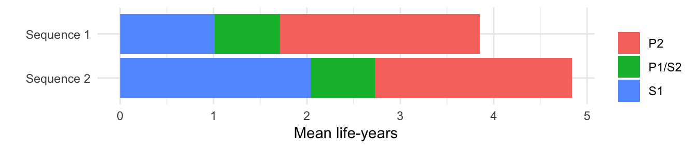
3.3.4 Costs
Mean costs for each randomly sampled parameter set are simulated by health state, treatment strategy, and category assuming a 3 percent discount rate. Furthermore, now that both costs and QALYs have been simulated, we can summarize clinical benefits and costs (i.e, compute mean costs and QALYs for each randomly sampled parameter set and treatment strategy). Here, we plot mean costs along with 95 percent credible intervals.
# Simulate
econmod$sim_costs(dr = .03)
ce_sim <- econmod$summarize()
# Plot
costs <- ce_sim$costs[dr == .03 , .(costs_mean = mean(costs),
costs_lower = quantile(costs, .025),
costs_upper = quantile(costs, .975)),
by = c("strategy_id", "category")]
strategy_factor(costs)
ggplot(costs[category == "total"],
aes(x = strategy_name, y = costs_mean)) +
geom_bar(stat = "identity", fill = "#d9230f") +
geom_errorbar(aes(ymin = costs_lower,
ymax = costs_upper), width=.2) +
scale_fill_discrete(name = "") +
xlab("") + ylab("Costs") +
scale_y_continuous(label = dollar_format()) 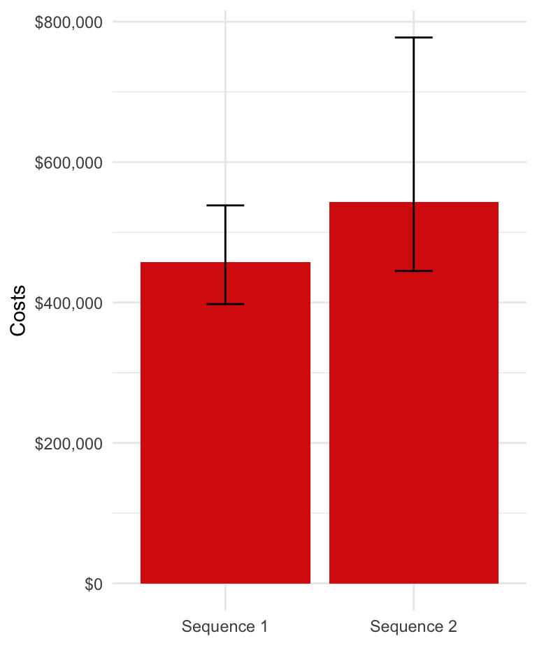
We can also decompose costs by category.
costs[, category_name := factor(category, levels = c("tx_ac", "tx_admin", "op", "inpt", "ae", "total"),
labels = c("Drug acquisition", "Drug administration",
"Outptient", "Inpatient", "Adverse event", "Total"))]
ggplot(costs[category != "total"],
aes(x = strategy_name, y = costs_mean, fill = category_name)) +
geom_bar(stat = "identity") +
scale_fill_discrete(name = "") +
xlab("") + ylab("Costs") +
scale_y_continuous(label = dollar_format()) 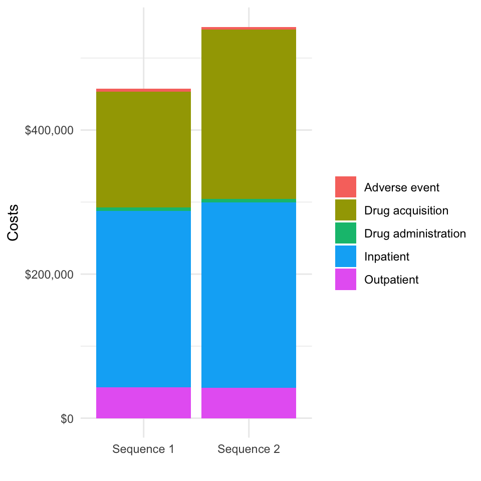
We might also want to examine incremental costs relative to a comparator (say treatment sequence 1).
# Incremental costs with Strategy 1 as the reference treatment
incr_costs <- vector(mode = "list", length = length(txseqs))
for (i in 1:length(txseqs)){
incr_costs[[i]] <- ce_sim$costs[, costs_comparator := costs[i],
by = c("category", "dr", "sample")]
incr_costs[[i]][, icosts := costs - costs_comparator]
incr_costs[[i]] <- incr_costs[[i]][, .(icosts_mean = mean(icosts),
icosts_lower = quantile(icosts, .025),
icosts_upper = quantile(icosts, .975)),
by = c("category", "dr", "strategy_id")]
strategy_factor(incr_costs[[i]])
}
incr_costs <- ce_sim$costs[, costs_comparator := costs[1],
by = c("category", "dr", "sample")]
incr_costs[, icosts := costs - costs_comparator]
incr_costs <- incr_costs[, .(icosts_mean = mean(icosts),
icosts_lower = quantile(icosts, .025),
icosts_upper = quantile(icosts, .975)),
by = c("category", "dr", "strategy_id")]
strategy_factor(incr_costs)
ggplot(incr_costs[dr == .03 & category == "total" &
strategy_id != 1],
aes(x = strategy_name, y = icosts_mean)) +
geom_bar(stat = "identity", fill = "#d9230f") +
geom_errorbar(aes(ymin = icosts_lower,
ymax = icosts_upper), width=.2) +
scale_fill_discrete(name = "") +
scale_x_discrete(drop = FALSE) +
xlab("") + ylab("Incremental costs") +
scale_y_continuous(label = dollar_format())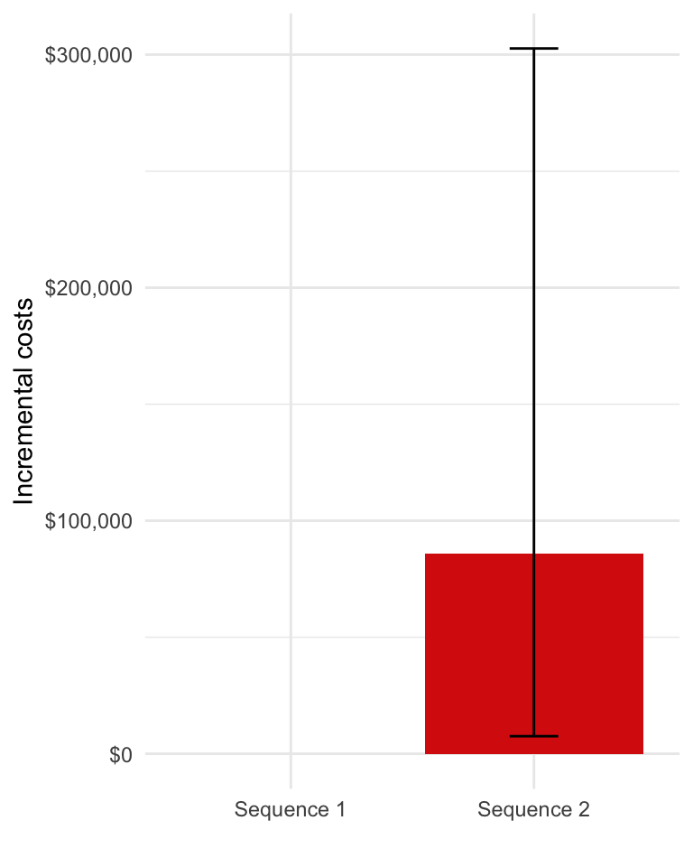
4 Decision analysis
Decision analysis can be performed using either a cost-effectiveness analysis (CEA) or a multi criteria decision analysis (MCDA) framework.
4.1 Cost-effectiveness analysis
CEA can be performed using hesim with the functions icea() and icea_pw(). For this analysis, we used the first treatment sequence as the comparator and assume a willingness to pay per QALY of $100,000.
We report incremental cost-effective ratios (ICERs)—a commonly used measure for summarizing the cost-effectiveness of interventions.
icer <- hesim::icer_tbl(icea_pw,
k = 100000, # WTP per QALY
cri = TRUE,
rownames = c("Incremental QALYs", "Incremental costs ($)",
"Incremental NMB ($)", "ICER ($ per QALY)",
"Conclusion"),
colnames = names(txseqs))
knitr::kable(icer)| Sequence 1 | Sequence 2 | |
|---|---|---|
| Incremental QALYs | - | 0.06 (0.02, 0.11) |
| Incremental costs ($) | - | 11,929 (1,841, 26,395) |
| Incremental NMB ($) | - | -5,743 (-17,021, 999) |
| ICER ($ per QALY) | - | 192,823 |
| Conclusion | - | Not cost-effective |
We can also visualize the degree of uncertainty in our simulated cost and QALY values with a cost-effectiveness plane. Simulated points for a given treatment sequence to the right of the dotted line are cost-effective relative to treatment sequence 1 given our willingness to pay threshold of $100,000.
ylim <- max(icea_pw$delta[, ic]) * 1.1
xlim <- max(icea_pw$delta[, ie]) * 1.1
strategy_factor(icea_pw$delta)
ggplot(icea_pw$delta, aes(x = ie, y = ic, col = strategy_name)) +
geom_jitter(size = .5) +
xlab("Incremental QALYs") + ylab("Incremental costs") +
scale_y_continuous(label = dollar, limits = c(-ylim, ylim)) +
scale_x_continuous(limits = c(-xlim, xlim)) +
scale_colour_discrete(name = "") +
geom_abline(slope = 100000, linetype = "dashed") +
geom_hline(yintercept = 0) + geom_vline(xintercept = 0)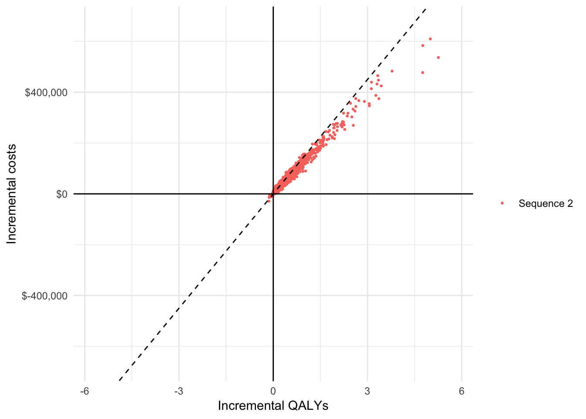
A cost-effectiveness acceptability curve (CEAC) is useful way to measure uncertainty in our decision about whether a treatment sequence is cost-effective. More precisely, the CEAC plots the proportion of simulations from the PSA that a treatment sequence is cost-effective relative to the comparator (y-axis) against different willingness to pay thresholds (x-axis).
strategy_factor(icea_pw$ceac)
ggplot(icea_pw$ceac, aes(x = k, y = prob, col = strategy_name)) +
geom_line() + xlab("Willingness to pay") +
ylab("Probability cost-effective") +
scale_x_continuous(label = scales::dollar) +
scale_colour_discrete(name = "")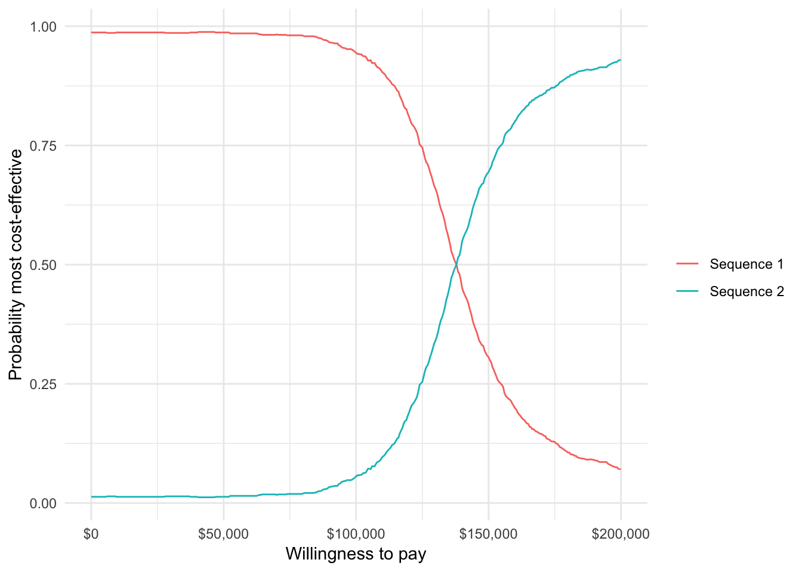
Finally, we can plot the expected value of perfect information (EVPI), which is a measure of the maximum amount that a decision maker would be willing to pay to reduce all uncertainty in all parameters.
ggplot(icea$evpi, aes(x = k, y = evpi)) +
geom_line() + xlab("Willingness to pay") +
ylab("Expected value of perfect information") +
scale_x_continuous(label = scales::dollar) +
scale_y_continuous(label = scales::dollar)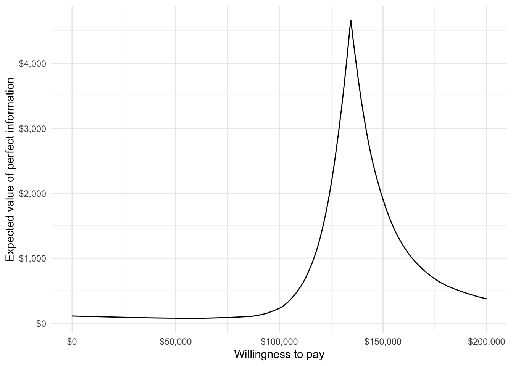
4.2 Multi criteria decision analysis
We perform the MCDA using the approach described by the 2016 ISPOR Task Force. Here, we assess the treatment strategies on six criteria: life-years with stable disease on 1L treatment, life-years with progressed disease on 1L treatment (or equivalently, life-years stable disease on 2L treatment), life-years with progressed disease on 2L treatment, health care sector costs, route of administration, and years since FDA approval. High values are better for life-years, route of admnistration (1 = oral, 0 = intravenous), and years since FDA approval while lower values are better for costs. Performance for the two treatemnt attributes—route of administration and years since FDA aprpoval—can be computed with txattr_performance(). Both are a weighted averages of each treatment in a treatment sequence, with weights equal to the proportion of total life years with each treatment.
Before conducting the MCDA, it useful to summarize the performance of the criteria on their original scales with a “performance matrix”.
hc_costs <- ce_sim$costs[!category %in% c("prod", "total"),
.(costs = sum(costs)),
by = c("sample", "strategy_id")]
txattr <- txattr_performance(struct = struct, patients = pats, econmod = econmod)
outcomes <- data.table(sample = rep(1:n_samples, each = length(txseqs)),
strategy_id = rep(1:length(txseqs), times = n_samples),
lys_s1 = econmod$qalys_[state_id == 1 & dr == 0.03, lys],
lys_p1 = econmod$qalys_[state_id == 2 & dr == 0.03, lys],
lys_p2 = econmod$qalys_[state_id == 3 & dr == 0.03, lys],
hc_costs = hc_costs$costs,
route = txattr$route,
yrs_since_approval = txattr$yrs_since_approval)
criteria_vars <- c("lys_s1", "lys_p1", "lys_p2", "hc_costs", "route", "yrs_since_approval")
criteria_names <- c("Life-years stable disease", "Life-years progressed 1L",
"Life-years progressed 2L", "Health care sector costs",
"Route of administration", "Years since FDA approval")
optimal <- c("high", "high", "high", "low", "high", "high")
performance_mat_orig <- performance_matrix(outcomes,
strategy = "strategy_id",
criteria = criteria_vars,
rownames = criteria_names,
colnames = names(txseqs))
knitr::kable(performance_mat_orig)| Sequence 1 | Sequence 2 | |
|---|---|---|
| Life-years stable disease | 0.43 (0.41, 0.46) | 0.51 (0.48, 0.53) |
| Life-years progressed 1L | 0.09 (0.07, 0.11) | 0.09 (0.07, 0.11) |
| Life-years progressed 2L | 0.07 (0.04, 0.09) | 0.07 (0.05, 0.09) |
| Health care sector costs | 81,075 (44,891, 116,852) | 93,005 (53,662, 133,581) |
| Route of administration | 0.95 (0.94, 0.96) | 0.95 (0.94, 0.96) |
| Years since FDA approval | 13.69 (13.63, 13.75) | 3.50 (3.42, 3.60) |
Next, we conduct the MCDA, which explicitly weights and scores the criteria. Specifically, each criterion is translated onto a common scale ranging from 0 to 100 and a “total value” is computed as weighted average of each criteria on this common scale. We’ll take a simple approach and use a linear partial value function, which assumes that performance on the original scale can be translated to a common scale in a linear fashion. We illustrate with health care sector costs, where a lower value is better.
plot_data <- lpvf_plot_data(outcomes$hc_costs, optimal = "low")
ggplot(plot_data, aes(x = x, y = y)) + geom_line() +
xlab("Health care sector costs") + ylab("Score") +
scale_x_continuous(label = dollar_format()) 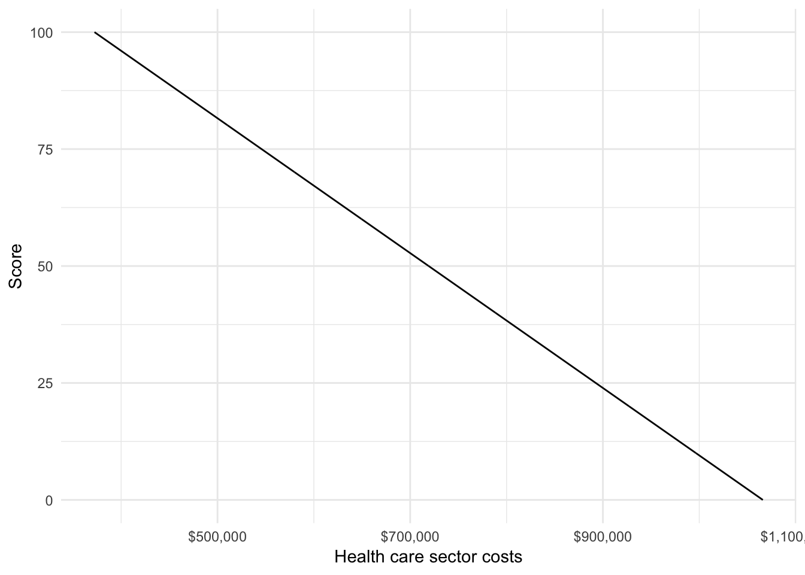
We would ideally estimate weights using preference elicitation techniques such as swing weighting or discrete choice experiments. But since we have not conducted such an analysis, we’ll use example weights for the analysis. We conduct the MCDA with function mcda(), which require a probability distribution of model outcomes (from the PSA) for each criteria by treatment strategy. The function translates performance of the criteria to a common scale and computes both a “total value” and the probability that each treatment strategy has a given rank.
weights <- c(.2, .2, .2, .3, .05, .05)
mcda <- mcda(outcomes, sample = "sample", strategy = "strategy_id",
criteria = criteria_vars,
weights = weights,
optimal = optimal)We can reexamine the performance matrix with criteria now translated to a common scale.
performance_mat_common <- performance_matrix(mcda$scores,
strategy = "strategy_id",
criteria = criteria_vars,
rownames = criteria_names,
colnames = names(txseqs))
knitr::kable(performance_mat_common)| Sequence 1 | Sequence 2 | |
|---|---|---|
| Life-years stable disease | 20.60 (3.71, 41.06) | 77.97 (57.73, 94.91) |
| Life-years progressed 1L | 40.64 (8.24, 83.87) | 41.99 (6.61, 82.95) |
| Life-years progressed 2L | 36.34 (4.71, 72.84) | 37.15 (11.13, 67.84) |
| Health care sector costs | 58.41 (19.53, 97.73) | 45.44 (1.35, 88.20) |
| Route of administration | 55.94 (23.59, 85.56) | 61.70 (25.13, 92.16) |
| Years since FDA approval | 99.41 (98.83, 99.99) | 0.89 (0.10, 1.88) |
We can also plot the “total value” scores along with 95 percent credible intervals computed using the PSA output.
# Total value
total_value <- mcda$total_value[, .(mean = mean(score),
lower = quantile(score, .025),
upper = quantile(score, .975)),
by = c("strategy_id")]
strategy_factor(total_value)
ggplot(total_value,
aes(x = strategy_name, y = mean)) +
geom_bar(stat = "identity", fill = "#d9230f") +
geom_errorbar(aes(ymin = lower,
ymax = upper), width=.2) +
scale_fill_discrete(name = "") +
xlab("") + ylab("Total value") 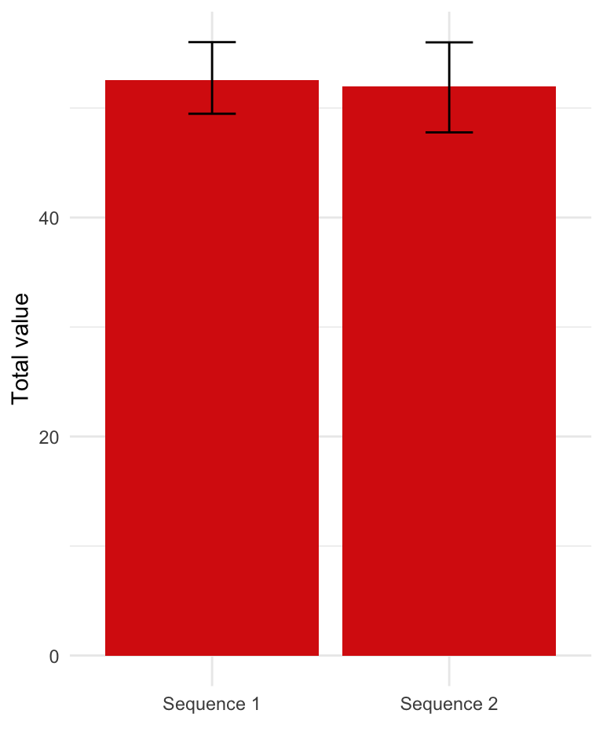
It can sometimes be useful to decompose these scores by criteria, to help which criteria are most important in driving the results. The contribution of each criteria is the product of the weight and its score on the common scale.
# Weighted scores
weighted_scores <- mcda$weighted_scores[, .(mean = mean(weighted_score)),
by = c("strategy_id", "criteria")]
weighted_scores[, criteria := factor(criteria,
levels = criteria_vars,
labels = criteria_names)]
strategy_factor(weighted_scores)
ggplot(weighted_scores,
aes(x = strategy_name, y = mean, fill = criteria)) +
geom_bar(stat = "identity") +
scale_fill_discrete(name = "") +
xlab("") + ylab("Total value") 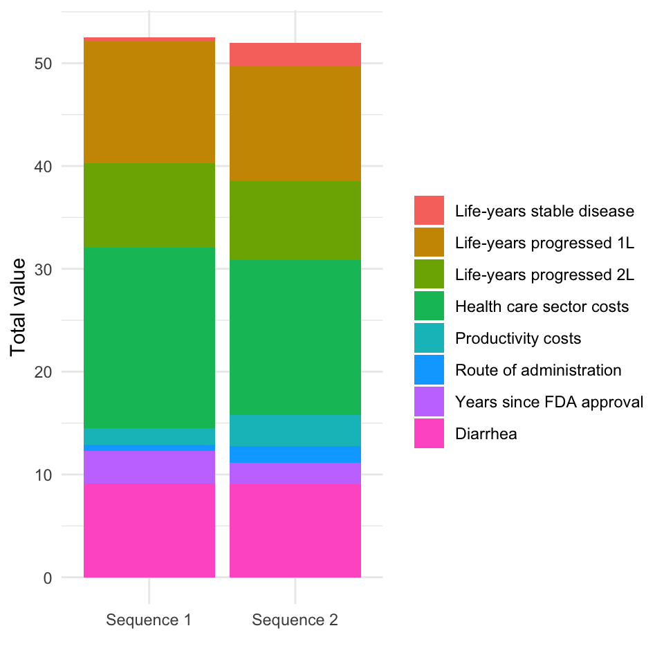
The treatment strategies can be ranked by their “total value”, which varies across samples of the PSA. We count the number of times each treatment strategy has a given rank and use this to compute the probability that a treatment strategy has a given ranking. We visualize these results in two equivalent ways: first, with treatment strategies on the x-axis and ranking as a group variable, and second, with rankings on the x-axis and treatment strategy as a group variable.
prank <- mcda$prob_rank
strategy_factor(prank)
prank_levels <- sort(unique(prank$rank))
prank[, f1_rank := factor(rank)]
prank[, f2_rank := factor(rank,
levels = prank_levels,
labels = paste0("Rank = ", prank_levels))]
# Rank on x-axis
p1 <- ggplot(prank,
aes(x = f1_rank, y = prob, fill = strategy_name)) +
geom_bar(stat = "identity", position = "dodge") +
scale_fill_discrete(name = "") +
xlab("Rank") + ylab("Probability") +
theme(legend.position = "bottom")
# Treatment sequence on x-axis
p2 <- ggplot(prank,
aes(x = strategy_name, y = prob, fill = f2_rank)) +
geom_bar(stat = "identity", position = "dodge") +
scale_fill_discrete(name = "") +
xlab("") + ylab("Probability") +
theme(legend.position = "bottom")
# Combine
grid.arrange(p1, p2, ncol = 2)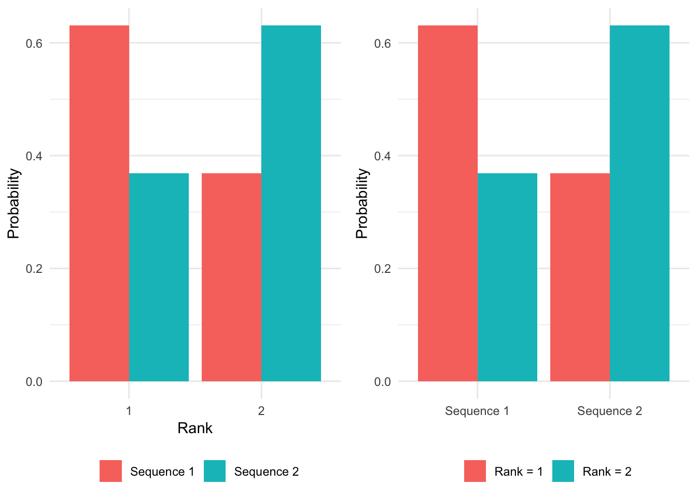